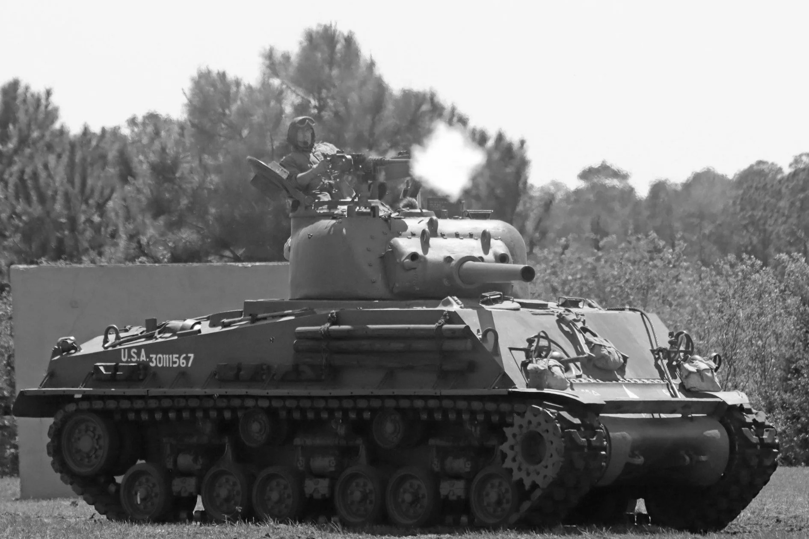
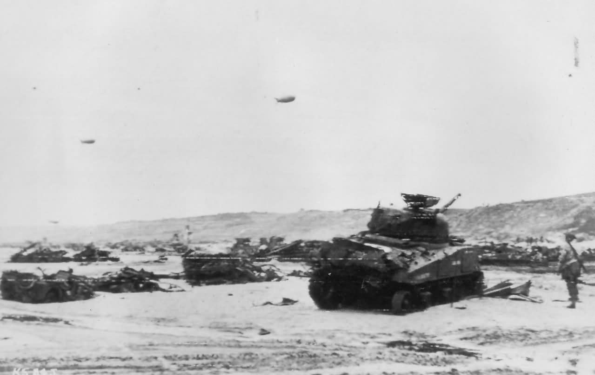
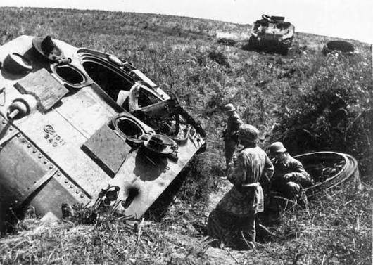
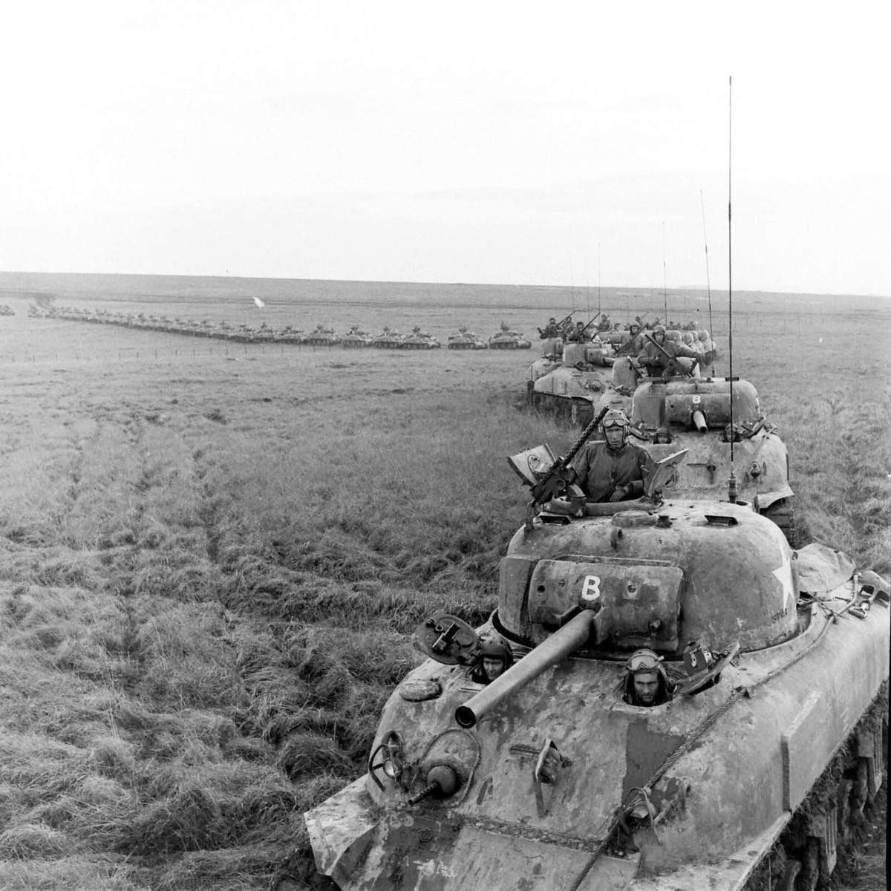
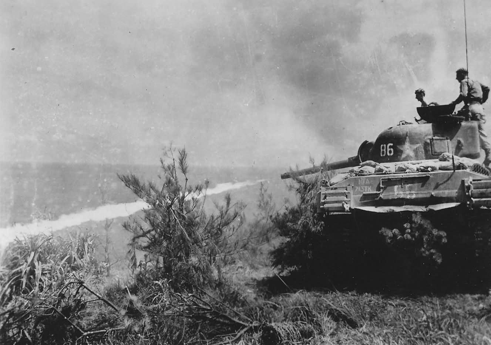

M4 Sherman
Giới thiệu
M4 Sherman là xe tăng hạng trung chủ lực của Hoa Kỳ trong Thế chiến II. Đây là mẫu xe tăng được sản xuất với số lượng rất lớn và được sử dụng không chỉ bởi quân đội Mỹ mà còn bởi Anh, Canada, Pháp, Ba Lan và nhiều quốc gia Đồng Minh khác.
Sherman nổi tiếng nhờ độ tin cậy cao, dễ bảo dưỡng, khả năng cơ động tốt và chi phí sản xuất hợp lý. Mặc dù hỏa lực và giáp bảo vệ không vượt trội so với các xe tăng hạng nặng của Đức, Sherman vẫn đóng vai trò quan trọng nhờ số lượng áp đảo và khả năng phối hợp tác chiến hiệu quả.
Lịch sử phát triển
Sau những kinh nghiệm từ các chiến dịch đầu tiên tại Bắc Phi, Hoa Kỳ cần một mẫu xe tăng hạng trung có thể sản xuất hàng loạt, dễ bảo trì và đủ linh hoạt để hoạt động trên nhiều chiến trường khác nhau.
M4 Sherman được đưa vào trang bị từ năm 1942 và nhanh chóng trở thành xương sống của lực lượng thiết giáp Đồng Minh trong suốt phần còn lại của cuộc chiến.
Thông số kỹ thuật
| Quốc gia | Hoa Kỳ |
|---|---|
| Tên đầy đủ | M4 Sherman |
| Loại | Xe tăng hạng trung |
| Khối lượng | Khoảng 30,3 tấn |
| Kíp lái | 5 người |
| Động cơ | Continental R975 C1 |
| Công suất | 400 mã lực |
| Tốc độ tối đa | Khoảng 48 km/h |
| Tầm hoạt động | Khoảng 190 km |
| Giáp | 12–108 mm |
Vũ khí
Phiên bản phổ biến nhất của Sherman được trang bị pháo 75 mm M3, có khả năng hỗ trợ bộ binh và tiêu diệt xe tăng hạng trung hiệu quả. Từ năm 1944, nhiều phiên bản được nâng cấp với pháo 76 mm M1 để tăng khả năng đối đầu Panther và Tiger.
- Pháo chính: 75 mm M3 hoặc 76 mm M1.
- Cơ số đạn: khoảng 90 viên.
- Súng máy Browning M1919A4 7,62 mm đồng trục.
- Súng máy Browning M1919A4 phía trước thân xe.
- Súng máy phòng không Browning M2HB 12,7 mm.
Ưu điểm
- Độ tin cậy cơ khí rất cao.
- Dễ bảo trì và sửa chữa.
- Khả năng cơ động tốt.
- Sản xuất với số lượng rất lớn.
- Hệ thống liên lạc vô tuyến hiện đại.
Nhược điểm
- Giáp bảo vệ không dày.
- Pháo 75 mm gặp khó khăn trước Tiger và Panther.
- Chiều cao thân xe lớn nên dễ bị phát hiện.
- Một số phiên bản đầu có nguy cơ cháy khi trúng đạn.
- Phải dựa vào chiến thuật hiệp đồng để đối đầu xe tăng Đức.
Các trận đánh tiêu biểu
Trận El Alamein (1942)
M4 Sherman lần đầu tiên tham chiến cùng Quân đội Anh trong trận El Alamein tại Bắc Phi. Hỏa lực và độ tin cậy của Sherman góp phần giúp lực lượng Đồng Minh giành ưu thế trước Quân đoàn Châu Phi của Đức.
Chiến dịch Tunisia (1943)
Sherman tiếp tục tham gia các chiến dịch tại Tunisia nhằm đánh bại lực lượng Đức và Ý ở Bắc Phi. Đây cũng là nơi Sherman lần đầu đối đầu trực tiếp với Tiger I.
Trận Normandy (1944)
Sau cuộc đổ bộ D-Day, Sherman trở thành lực lượng thiết giáp chủ lực của Đồng Minh tại Pháp. Mặc dù phải đối mặt với Panther và Tiger, số lượng lớn cùng sự hỗ trợ của không quân giúp Sherman hoàn thành nhiệm vụ.
Trận Bulge (1944–1945)
Trong cuộc phản công cuối cùng của Đức tại Ardennes, Sherman đóng vai trò quan trọng trong việc ngăn chặn các đơn vị thiết giáp Đức và giữ vững phòng tuyến của Đồng Minh.
Chiến dịch vượt sông Rhine (1945)
Ở giai đoạn cuối chiến tranh, Sherman tham gia vượt sông Rhine và tiến sâu vào lãnh thổ Đức. Các đơn vị Sherman hỗ trợ bộ binh giải phóng nhiều thành phố trước khi chiến tranh tại châu Âu kết thúc.
Đánh giá tổng quan
M4 Sherman không phải là xe tăng mạnh nhất của Thế chiến II, nhưng lại là một trong những mẫu xe tăng thành công nhất nhờ độ tin cậy cao, khả năng sản xuất hàng loạt và dễ bảo dưỡng. Hơn 49.000 chiếc Sherman đã được chế tạo, trở thành lực lượng thiết giáp chủ lực của quân Đồng Minh.
Khả năng phối hợp với bộ binh, pháo binh và không quân giúp Sherman phát huy hiệu quả rất lớn trên chiến trường. Sau chiến tranh, Sherman vẫn tiếp tục phục vụ tại nhiều quốc gia trong nhiều thập kỷ.
Thư viện ảnh



